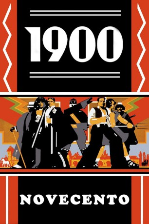

#3925 1900 - Teil 2 - Kampf, Liebe, Hoffnung
Alternativ: 1900 (Englischer Titel)
 
 IMDB-Wertung: 7.7 / 10
IMDB-Wertung: 7.7 / 10  Metascore: 0
Metascore: 0 
Jahrhundert-Epos von Bertolucci um zwei zum selben Zeitpunkt geborene Jungen die zu Männern reifen und aufgrund ihrer Herkunft zu politischen Gegnern werden. Zwischen beiden steht die mondäne Ada, die das Unheil in der Allianz von Adel und Kirche mit den Faschisten kommen sieht.
Jahr: 1976
Dauer: 153 Minuten
FSK: 16
Land: Italien Studio: United ArtistsTonspuren:
Untertitel: Deutsch,
Auflösung: 1080p (1920x1040) Größe: 13414 MB
Genre: Drama
Regisseur:  Bernardo Bertolucci
Bernardo Bertolucci
Drehbuch: Elise Allen
Soundtrack:
Darsteller:
Datei: X:\2-Dilogie(A-F)\1900 - Novecento\1900 - Teil 2 - Kampf, Liebe, Hoffnung (1976, FSK16, 1920x1040).mkv seit 30.06.2016
Festplatte: HD Collection-2(A-Z)-3(A-M)
 Alle Filme aus Gruppe '2-Dilogie(A-F)\1900 - Novecento'
Alle Filme aus Gruppe '2-Dilogie(A-F)\1900 - Novecento'